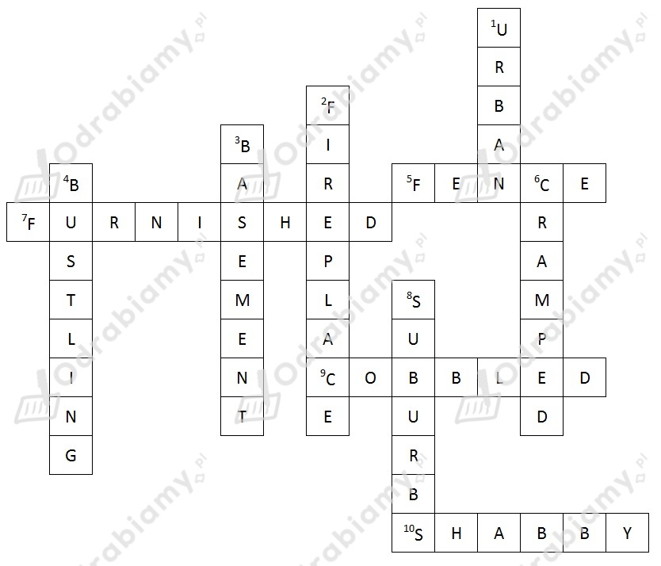

Rozwiązanie:

Tłumaczenie haseł z krzyżówki:
Pionowo:
1. związany z miastem albo będący w mieście (np. obszar, rozwój) - miejski
2. specjalne miejsce w ścianie pokoju, gdzie można rozpalić ogień - kominek
3. pomieszczenie w budynku, które jest pod powierzchnią ziemi - piwnica
4. pełen akcji, żywy (np. rynek miejski) - tętniący życiem
6. nie posiadający wystarczająco dużo miejsca (np. o pokoju) - ciasny
8. obszar, w którym mieszkają ludzie, który znajduje się z dala od centrum miasta - przedmieścia
Poziomo:
5. drewniana albo metalowa struktura między dwoma posesjami - płot
7. zawierający meble - umeblowany
9. wyłożony dużymi kamieniami, po których trudno się chodzi - brukowany
10. w złym stanie z powodu zaniedbania - nędzny
1. A
2. D
3. B
4. B
5. A
6. C
7. B
8. D
Tłumaczenie uzupełnionych zdań (wstawione wyrazy zostały pogrubione):
1. Jej mąż był niechlujem. Nigdy nie wsadzał swoich brudnych ubrań do kosza na pranie.
2. Nie mógł znaleźć swoich kluczy. Był pewien, że zostawił je w szufladzie. Otworzył ją, ale nic tam nie było.
3. Wzięła wełnianą narzutę i założyła ją na siebie. Nie znosiła starego i pełnego przeciągów domu swojej matki.
4. Wszędzie miała sterty ubrań. Musiała zrobić generalne porządki i pozbyć się części z nich.
5. Otworzyła swój prezent ślubny. "Świetnie!" pomyślała. "Kolejny sprzęt kuchenny, którego nie potrzebuję."
6. Dom miał kuchnię na wymiar. Miała wszystkie sprzęty których można zapragnąć, łącznie z piecem i zamrażarką.
7. Ciepła poświata biła od kominka. To sprawiało, że w domu można było poczuć się "jak w domu".
8. W okolicy było wiele uboższych ludzi, więc rząd postanowił wybudować więcej mieszkań socjalnych.
1 - i (pogłębić wiedzę)
2 - d (zapisać się na kurs)
3 - f (oddać pracę domową)
4 - b (uważać, być skupionym)
5 - e (odkładać napisanie eseju)
6 - g (przebrnąć przez egzaminy końcowe)
7 - a (podchodzić do egzaminu)
8 - h (nadążać za resztą klasy)
1. pay attention
2. deepen your knowledge
3. handed in my homework
4. scrape through through my final exams
5. keep up wth the rest of the class
Tłumaczenie uzupełnionych zdań (wstawione wyrażenia zostały pogrubione):
1. Wiem, że muszę uważać podczas lekcji, ale czasami się rozpraszam, zwłaszcza kiedy jestem zmęczony.
2. Biologia i chemia to moje ulubione przedmioty. Oglądam nawet filmy na ten temat w swoim wolnym czasie. Uważam, że to dobrze pogłębiać swoją wiedzę w dziedzinach, które mnie interesują.
3. Oddałem swoją pracę domową dwa tygodnie temu, ale nauczyciel jeszcze jej nie sprawdził. Jestem trochę zły: spędziłem nad nią cały weekend!
4. Ostatnio w ogóle się nie uczyłem. Ale jestem nawet mądry, więc jeśli dopisze mi szczęście, to może przebrnę jakoś przez egzaminy końcowe.
5. Ominęło mnie wiele ważnych lekcji kiedy złamałem sobie nogę, ale ciężko się uczyłem, żeby nadążyć za resztą klasy.